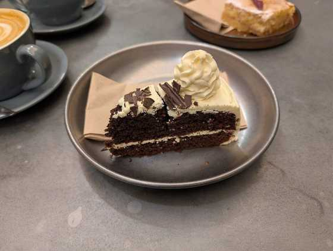
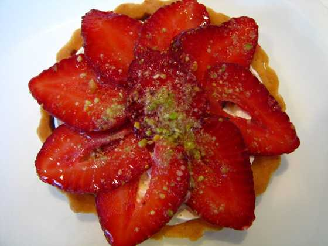
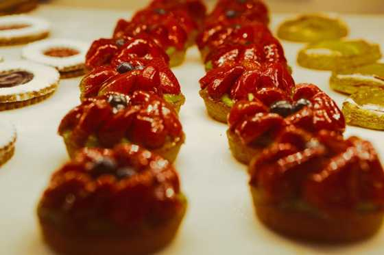
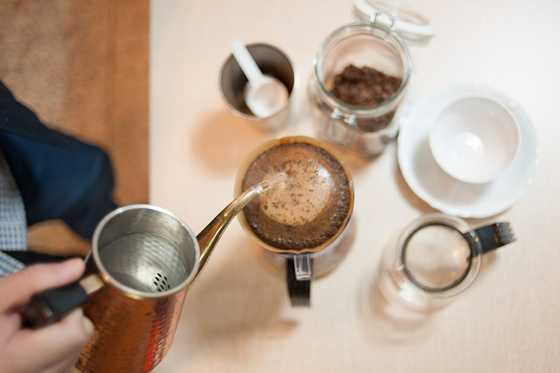

6席のカフェ / 千葉県長生郡一宮町
hajimeはじめ
ひと口めから、ゆっくり始まる時間を。
6席のちいさなカフェです。
焼き菓子やケーキと、ゆっくりいただく飲みもの。いまの様子はInstagramでご覧いただけます。

店のこと
6席だけの、ちいさなカフェ。
hajime(はじめ)は、千葉県長生郡一宮町にあるカフェです。Instagramのプロフィールには「6席のみのカフェ」とあります。席数がかぎられているぶん、ひとりひとりのお客様と、ひと皿ひと皿に向き合う場所なのだと思います。
投稿には、シフォンケーキやティラミス、タルト、焼き菓子、チーズケーキなどのスイーツの写真が並んでいます。
店名の由来やお店の成り立ちは、確認できていません。このページの「ひと口めから、ゆっくり始まる時間を。」は、「はじめ」という響きと6席という規模から考えた、制作側のイメージです。お店の言葉ではありません。

メニュー
スイーツと、ゆっくりの一杯。
Instagramの投稿写真から、シフォンケーキ、ティラミス、タルトや焼き菓子、チーズケーキ、フルーツケーキなどが並ぶ様子がうかがえます(推測を含み、品書きの確定ではありません)。下の写真はすべてイメージです。

ケーキ

タルト

焼き菓子

飲みもの
品書き・価格: 準備中





口コミ
お客様の声(イメージ例)
以下は制作側が作成したイメージ例です。実在のお客様の声ではありません。
席数が少なくて、静かに過ごせました。ケーキをゆっくり味わえる時間がうれしいです。
お散歩のついでに立ち寄りました。小さなお店ですが、居心地のよさが印象に残っています。
焼き菓子をお土産にしました。次は席でゆっくりいただきたいです。
アクセス
お店の場所と情報
| 所在地 | 千葉県長生郡一宮町一宮933-6 |
|---|---|
| 席数 | 6席(Instagramプロフィールより) |
| 営業日・時間 | Instagramには「火・水・土・日 11時〜16時」とあります。変更があるかもしれませんので、ご来店前にInstagramでご確認ください。 |
| 電話 | 準備中 |
| SNS | Instagram @hajime__ichinomiya |